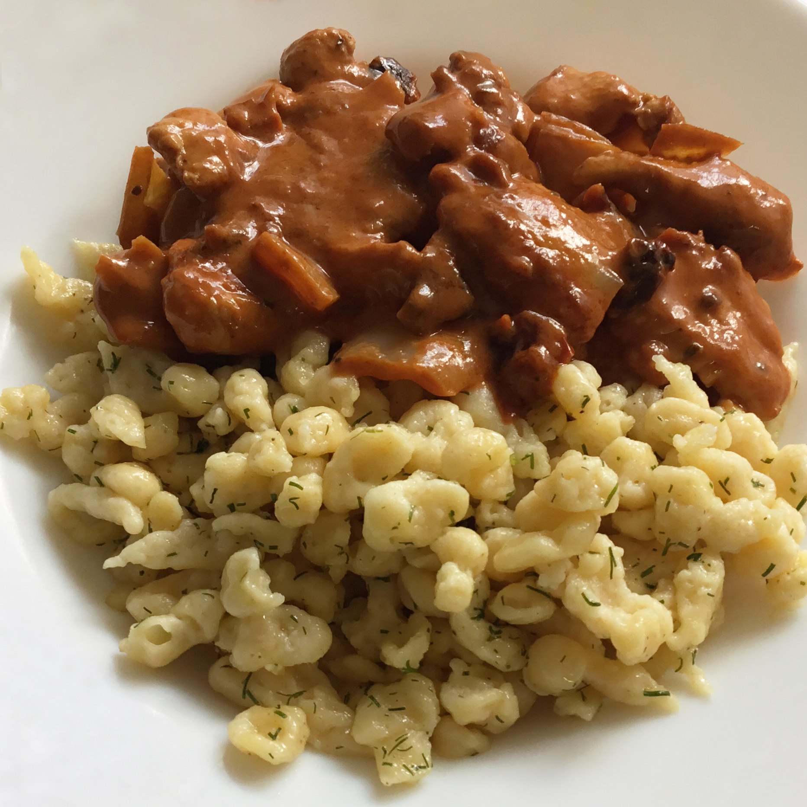

German Spaetzle Dumplings

Description
Spaetzle are traditional German dumplings. You can also
mince a few pieces of bacon in a pan, heat the cooked
spaetzle in the bacon drippings and omit the butter.
Ingredients
- 1 cup all-purpose flour
- ½ teaspoon ground nutmeg
- ½ teaspoon salt
- 1 pinch freshly ground white pepper
- 2 eggs
- ¼ cup milk
- 2 tablespoons butter
- 2 tablespoons chopped fresh parsley
Steps
- Fill a large pot halfway full with water and bring
to a boil. Adjust heat so water just simmers.
- Meanwhile, mix together flour, nutmeg, salt, and
white pepper in a medium bowl.
- Whisk eggs together in a small bowl. Add eggs
alternately with milk to dry ingredients. Stir
until smooth.
- Working in batches, press dough through a spaetzle
maker, or through a large-holed colander or metal
grater, into simmering water. Cook 5 to 8 minutes.
Remove with a slotted spoon or spider and drain well.
- Melt butter in a large skillet. Add spaetzle and
cook, stirring gently, until heated through. Serve
sprinkled with parsley.
Source: allrecipes.com